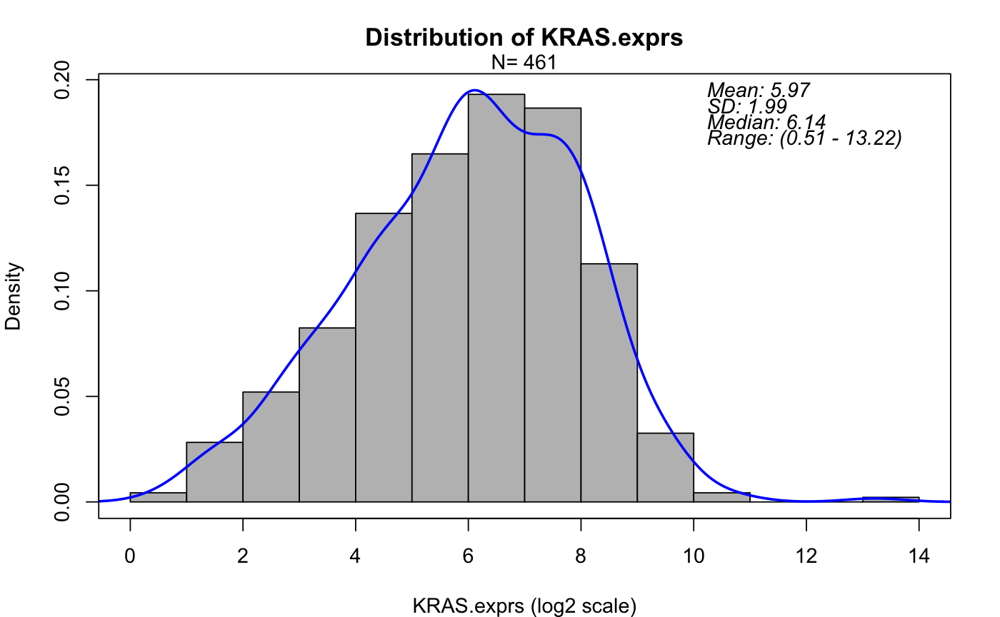

Generate density plot for a continuous covariate.
PlotDens(data, var, log2 = FALSE, col = "blue", text.font = 3, main = paste("Distribution of", var), add.num = 0, xlab = paste(var, ifelse(log2 == TRUE, "(log2 scale)", "")), pdf.name = NULL, pdf.param = list(width = 6, height = 4.5), par.param = list(mar = c(4, 4, 3, 2)))
| data | Input data frame. Rows are patients and columns are variables (e.g. demographics variables, time to event variables, biomarker variables, treatment indicator, etc.). One patient per row. |
|---|---|
| var | Name of a variable (e.g. a biomarker variable). Should be in colnames of |
| log2 | If TRUE, computes binary (i.e. base 2) logarithm. Default is FALSE. |
| col | The color of the line segments. Default is blue. |
| text.font | Legend text font size. Default is 3. |
| main | The main title. Default is |
| add.num | The constant to add to all values. Helps to avoid applying log transformation on 0 or negative values. Default is 0. |
| xlab | X axis label. Default is |
| pdf.name | Name of output pdf file. If it's NULL (default), the plots will be displayed but not saved as pdf. |
| pdf.param | A list of parameters that define pdf graphics device. See |
| par.param | A list of parameters that define graphcial parameters. See |
Histogram and density will be shown. Summary statistics will be also shown on the plots.
data(input) PlotDens(data=input, var="KRAS.exprs", log2=TRUE)